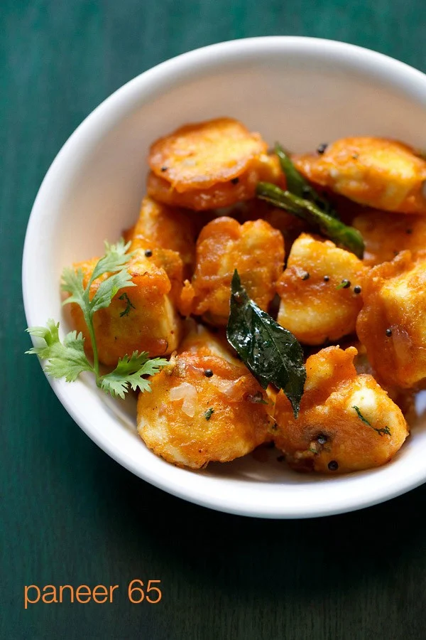

Paneer 65 Recipe
Paneer 65 is a versatile dish that is prepared several different ways, depending on the region or restaurant. It’s made with cubes of paneer cheese that are marinated in spices and pan fried to perfection. My version makes for crispy paneer cubes tossed with a savory spiced mixture of aromatics and pairs well with any number of sides. Here you’ll find step-by-step photos and instructions for making our favorite Paneer 65 recipe at home.
How to Make Paneer 65
Make the Batter To Coat Paneer
1. Add 3 tablespoons of rice flour, 1 tablespoon besan (gram flour) and 2 tablespoon cornstarch in a mixing bowl.
You can also use finely ground corn meal or maize flour (makki ka atta) instead of corn starch.
2. Then to the same mixing bowl add the following ingredients:
*1 teaspoon green chili paste (crush 1 small green chili in mortar-pestle)
*1 teaspoon garlic paste (crush 3 to 4 medium-sized garlic cloves in mortar-pestle)
*1 teaspoon ginger paste (crush 1 inch peeled ginger in mortar-pestle)
*½ teaspoon red chili powder
*¼ to ½ teaspoon garam masala powder
*¼ teaspoon lemon juice
salt as required to taste
3. Now add 4 tablespoons water.
4. Whisk into a smooth, slightly thick batter. If the batter looks a bit too thin, and a sprinkle of rice flour.
For a brightly-colored dish you can also add a few drop of natural food color. Here I use a bit of orange natural color extract.
5. Add 200 grams (1 cup) of chopped paneer cubes.
6. Gently mix the paneer cubes with the batter. Be careful to not break the chunks apart. Cover and marinate the cheese for about 15 to 20 minutes at room temperature.
Fry Paneer
7. Now heat 5 tablespoons of oil in a deep pan over medium heat. For a dish with less fat and calories, only use 2 to 3 tablespoons of oil. But note that your paneer 65 won’t be quite as crispy.
You can turn the heat down to low as you fry the paneer if they get too hot. One at a time add the marinated paneer cubes to the hot oil.
Be sure to leave a bit of space between the pieces of cheese so that they don’t stick. Fry for a couple of minutes, until the base of the paneer becomes cooked and slightly browned. If you need to, work in batches.
8. Once the bottom is done, flip and fry the other side. Continue to flip and fry the cubes back and forth a few times, until they are crisp on all sides.
But be careful to not overcook them, or the paneer cubes will become dry and dense.
9. Drain the fried paneer cubes on kitchen paper towels to remove any excess oil. Again, fry the cheese in batches if needed to not overcrowd the pan.
Make Paneer 65
10. Once the cheese has all been fried, in the same pan heat 2 teaspoons of oil over medium-low heat. (If there is an excess of oil left in the pan from frying the paneer, there is no need to add this extra oil.)
Then add ½ teaspoon mustard seeds, if you like. However feel free to leave out the mustard seeds if you prefer.
11. Fry the mustard seeds for a moment or two, until they crackle and become fragrant. Then add the below listed spices and herbs:
*½ teaspoon chopped ginger
*½ teaspoon chopped garlic
*2 to 3 green chilies chopped diagonally
*1 to 2 dry red chilies
*6 to 7 curry leaves
Stir to mix well.
12. Then add 3 tablespoons chopped red or white onions.
13. Stir and sauté the onions until they become translucent and are softened.
14. Next add 2 to 3 pinches of salt and ¼ teaspoon sugar. I like to add the sugar to help balance out the spiciness of the Paneer 65 dish, but feel free to skip if you want.
15. Stir again to combine.
16. Add the fried paneer cubes to the pan.
17. Mix and gently toss the paneer cubes with the rest of the sauteed ingredients. Taste, and add a pinch more salt, sugar, or chopped green chilies.
Turn off the stove and remove the pan from the heat.
18. Lastly, add chopped coriander leaves (cilantro). Stir. Drizzle some lemon juice if you prefer.
19. Serve paneer 65 hot as is or with a dipping sauce or Mint Chutney.